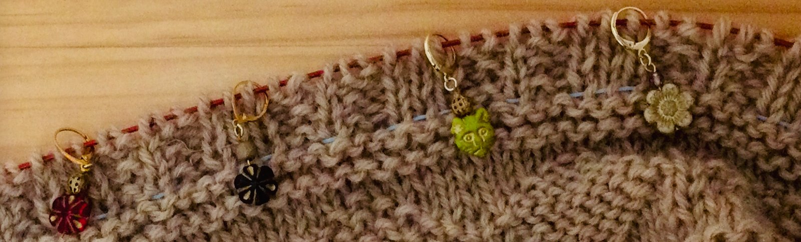
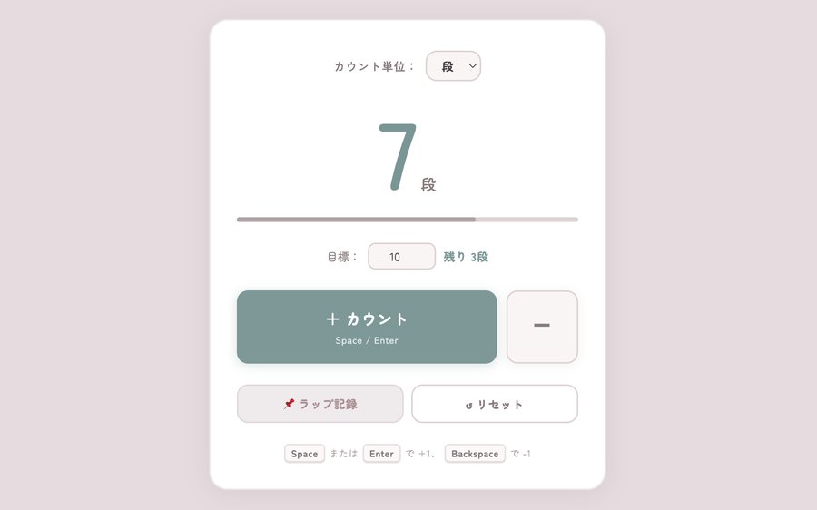
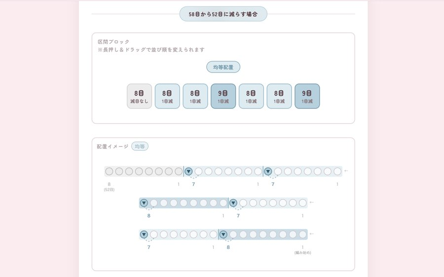
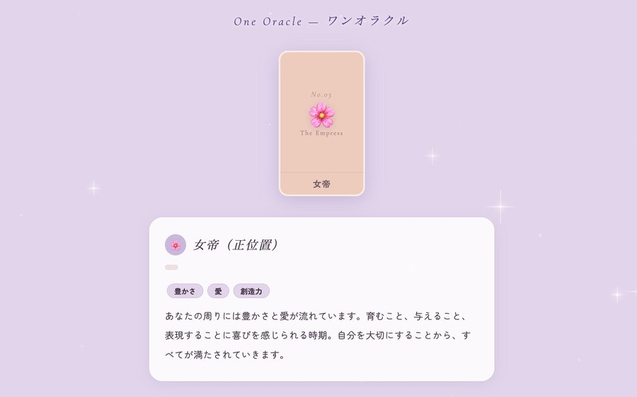

準備中です。もうしばらくお待ちください。
無料で使える大人かわいいアプリをまとめました
✿YUCCHI✿

A Little Easier, A Little Cozier
編み物とくらしをちょっと便利に心地良くするアプリを無料で公開しています。
棒針・かぎ針編みをサポートするアプリをまとめました。編み物をもっと楽しく。

目数・段数・周数・回数をシンプルにカウント
公開中
分散減目・分散増目をかんたん計算
公開中編み図を見やすくサポート
準備中毎日のくらしをちょっと便利に心地良く。少しづつアプリを増やしています。

気軽に楽しめるタロットカード
公開中日々のくらしをかわいく記録
準備中編み物やくらしの記録。
準備中です。もうしばらくお待ちください。
準備中です。もうしばらくお待ちください。
このサイトは、編み物や日々の暮らしをちょっと便利にするアプリをまとめた、個人制作のポータルサイトです。
各アプリの計算結果・提案内容はすべて参考情報としてお使いください。仕上がりや結果はゲージ・素材・個人差によって異なりますので、必ずご自身でご確認のうえお使いください。
作者（YUCCHI）は、このサイトおよび掲載アプリの内容・結果によって生じたいかなる損害についても責任を負いかねます。あらかじめご了承ください。
編み物×AI×大人かわいいを発信中です。